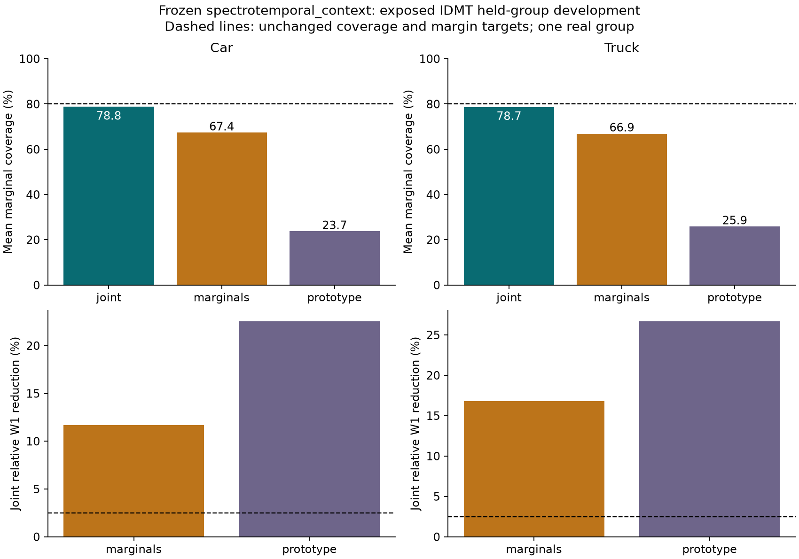
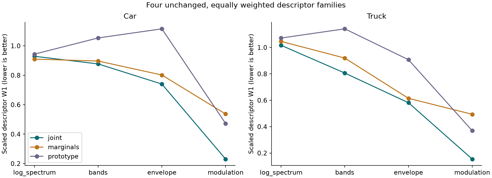

Previously exposed IDMT development group; no fresh independent confirmation or classification result. Generated examples are unconditional draws, not reconstructions of the held recordings. Example selection is fixed: first held ID per class and seed 42/index 0 per generated arm. Playback gains are recorded in the linked sidecars; comparisons are of unit-RMS acoustic shape, not physical loudness.
The 69-coordinate marginal control breaks spectral and envelope dependence. Its margin is representation dependent; it is not a universal best competing generator.
Local research derivatives, CC BY-NC-ND 4.0; no redistribution authorization.
Declared scientific criteria: FAIL. Complete scores; failure record; replay verification.

